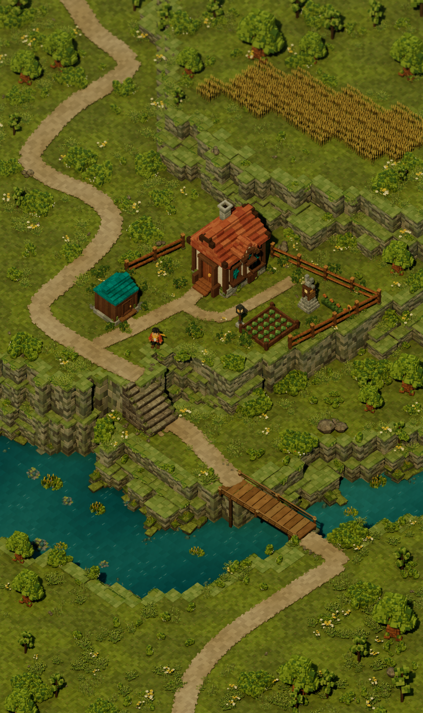
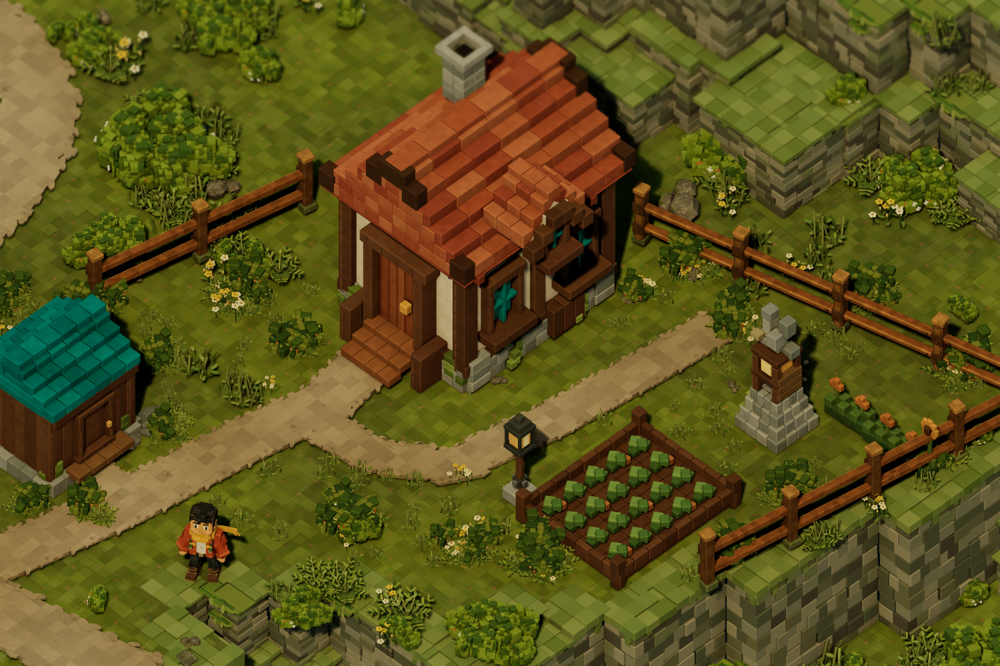
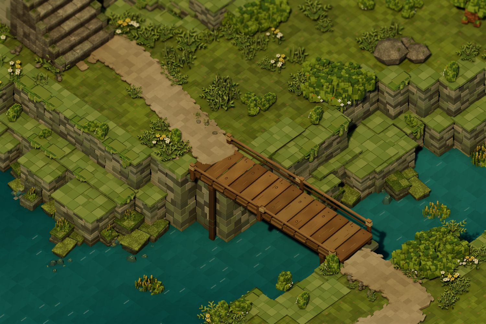

The homestead, assembled
The supplied reference alongside the native Unreal environment. The cottage, shed, garden, wheat terrace, stairs, river crossing and winding trail are assembled with the rebuilt explorer and vegetation.
 Supplied reference · the inset is an asset preview outside the scene
Supplied reference · the inset is an asset preview outside the scene
Unreal · HomesteadReference · actual Lit renderFeature and layout review passed. The reconstruction is more regular and cleaner in its surfaces than the source illustration; it is not an exact artistic copy. This is a static environment, with gameplay, collision and animation untested.

Courtyard and rebuilt explorer
Lower landing, riverbank and timber crossing